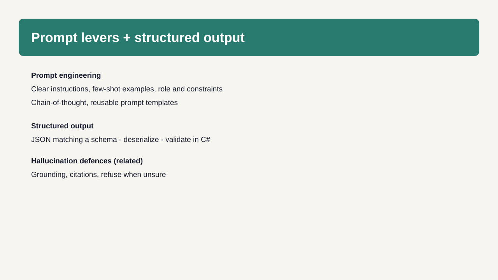

Phase 0 treats “control” as three layers: generation settings on the API, prompt design in the message list, and structured output + validation in your application. Tokens and roles have their own topics — linked below — but they directly affect what you can steer.
From the deck


Phase 0 checklist — everything that shapes output
Use this as a map. Items marked topic have dedicated pages; the rest are covered here.
- Tokens & context window (topic) — how much text fits; drives truncation and cost.
- System, user, assistant roles (topic) — where policy and conversation live.
- Temperature — randomness of word choice (see table below).
- Top-p (nucleus sampling) — alternative/complement to temperature.
- Max tokens — hard cap on completion length.
- Stop sequences — strings that halt generation early.
- Streaming — deliver partial output as tokens arrive (UX/latency, same underlying generation).
- Structured output — JSON (or tools) constrained by a schema; validate after parse.
- Clear instructions — explicit task, format, and boundaries.
- Few-shot examples — input/output pairs in the prompt.
- Role & constraints — persona and rules (usually system message).
- Chain-of-thought (CoT) — step-by-step reasoning when the task is hard; hide steps from users if needed.
- Prompt templates — reusable shells with placeholders for user data.
- Grounding & hallucination defences — RAG, citations, “say I don’t know”, human review (Phase 0 awareness).
Generation settings (API)
| Setting | Effect | Typical use |
|---|---|---|
| Temperature | Lower = more deterministic; higher = more varied wording (not “smarter”). | 0–0.3 extraction, code, compliance; 0.7+ brainstorming copy. |
| Top-p | Sample only from the smallest set of tokens whose cumulative probability ≥ p. | Often set one of temperature or top-p; check provider guidance. |
| Max tokens | Caps completion size — avoids runaway cost and truncated mid-answer. | Set from expected JSON size or summary length + buffer. |
| Stop sequences | End generation when the model emits a given string. | Delimiters between sections, end of JSON array, tool markers. |
| Streaming | Tokens sent incrementally over HTTP/SSE. | Chat UIs; still apply max tokens and validation on the full result. |
Prompt engineering (same request)
| Lever | What to do |
|---|---|
| Clear instructions | State task, audience, format (bullets, JSON keys), and forbidden actions in plain language. |
| Few-shot examples | Show 1–3 ideal input → output pairs before the real user input. |
| Role & constraints | System message: expert persona, tone, and hard rules (see Roles). |
| Chain-of-thought | Ask for steps on complex logic; for production, parse only the final answer field. |
| Prompt templates | Store stable text in repo or config; inject {{variables}} at runtime — same pattern as Useful prompts. |
Structured output in .NET services
Ask for JSON matching a schema (native structured-output or JSON mode + schema in the prompt), then deserialize and validate (FluentValidation, JsonSerializer, source generators). Retry or fail closed on parse errors. Never trust raw model text for security, money, or irreversible actions without checks.
Related patterns: tool/function calling (model emits structured calls you execute), and RAG for factual grounding — both reduce free-form hallucination.
Examples
API request (illustrative JSON)
{
"model": "gpt-4o-mini",
"messages": [ { "role": "user", "content": "List three risks for go-live." } ],
"temperature": 0.2,
"top_p": 1.0,
"max_tokens": 400,
"stop": ["\n\n---"],
"stream": true
}Few-shot + constraints (prompt excerpt)
Return JSON only: { "title": string, "severity": "low"|"medium"|"high" }
Example:
Input: "TLS cert expires tomorrow"
Output: { "title": "Certificate expiry", "severity": "high" }
Input: "Typo in footer link"
Output: { "title": "Broken footer link", "severity": "low" }
Now classify: "No rollback tested for DB migration"Prompt template (backend)
// appsettings or embedded resource
"You are a release-notes assistant. Max 120 words. British English.
Service: {{ServiceName}} Version: {{Version}}
Changes:
{{ChangeList}}"Chain-of-thought (then extract)
User: "Should we enable feature flag X for 10% of users first?"
Assistant (internal): [steps: blast radius, metrics, rollback...]
Final answer only: "Yes — canary 10% for 48h with error-rate alert > 2%."In UIs you may show steps; in APIs strip to the field you validate.
Structured output + validation (C# sketch)
var json = await chatClient.GetCompletionAsync(...);
var dto = JsonSerializer.Deserialize<RiskDto>(json);
if (dto is null || !validator.Validate(dto).IsValid)
throw new InvalidOperationException("Model output failed validation");Advanced
Combine low temperature + schema validation for extraction; use higher temperature only where humans review. Log settings per request for reproducibility. See What is an LLM? for why the model still guesses without grounding.
Provider parameter names differ — check Azure OpenAI / OpenAI docs for your deployment.